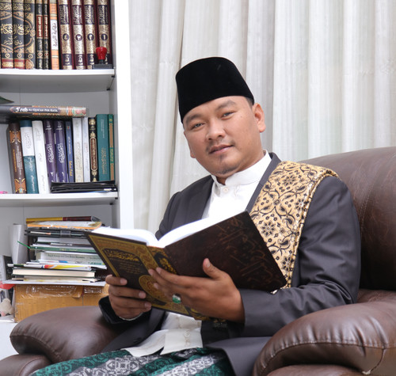
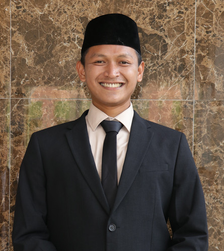
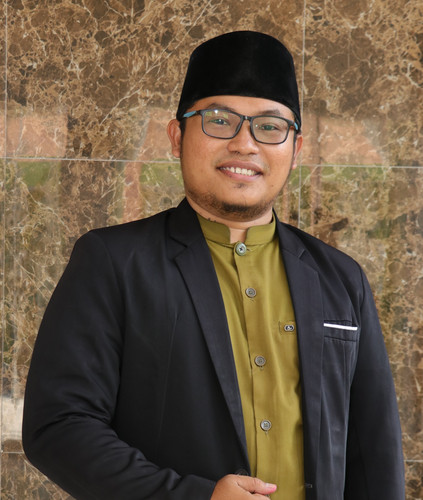

+62 812-3456-7890
"Merawat Tradisi, Merespons Modernisasi"
SMA Islam Plus Darul Fuqoha Indonesia untuk mencetak generasi unggul yang berakhlak mulia, berwawasan global, dan siap menghadapi tantangan masa depan.
Siswa Aktif
Pengajar Profesional
Program Ekstrakurikuler
Dipimpin oleh tokoh pendidikan yang berpengalaman dan berdedikasi tinggi.

"Pimpinan dan Pengasuh Pondok Pesantren"
Memimpin Pondok Pesantren Darul Fuqoha Indonesia dengan visi mencetak generasi yang berilmu dan berakhlak mulia.

"Kepala Sekolah"
Mengelola dan mengembangkan SMA Islam Plus Darul Fuqoha Indonesia dengan standar pendidikan berkualitas.

"Kepala Madrasah Salafiyah"
Mengelola dan mengembangkan Madrasah Salafiyah dengan pendekatan tradisional yang kuat dan berkualitas.
Kurikulum terintegrasi yang memadukan pendidikan umum dan pesantren untuk
membentuk karakter dan kompetensi siswa.
Komitmen kami untuk mengembangkan potensi siswa secara komprehensif.
Menguasai matematika dan sains baik secara teori maupun praktik
Meraih juara dalam olimpiade akademik dan non-akademik di tingkat kab/kota, provinsi, dan nasional
Implementasi karakter Sosio-Technopreneur (kewirasuhaan sosial berbasis teknologi)
Memiliki keahlian dalam melakukan pemetaan sosial di masyarakat (social mapping)
Optimalisasi pembelajaran berbasis proyek (project based learning)
Menerapkan bahasa asing baik Bahasa Arab maupun Bahasa Inggris dalam keseharian
Memiliki kompetensi di bidang teknologi dan informasi terapan
Memiliki kompetensi di bidang teknologi dan informasi terapan
Menyelenggarakan program persiapan masuk perguruan tinggi dalam negeri dan luar negeri
Mampu membaca dan menghafal Al-Qur'an dengan benar sesuai tajwid, makhroj, dan fashohah
Mahir membaca dan memahami Kitab Kuning dengan baik dan benar sesuai kaidah ilmu alat dan bersanad
Menguasai materi fiqih beserta penjelasan Ayatul Ahkam dan Fiqih Hadist
Mampu menghafal bait-bait Kitab Nahwu Alfiyah, Shorof, Usul Fiqih, dan kitab-kitab lainnya
Program tambahan untuk memperkaya pengalaman belajar siswa.
Kegiatan di luar jam pelajaran untuk mengembangkan minat dan bakat siswa.
Komitmen kami untuk mengembangkan potensi siswa secara komprehensif.
Bangunan modern yang nyaman untuk belajar
Tempat tinggal yang aman dan nyaman
Suasana belajar yang nyaman
Tempat ibadah yang luas dan nyaman
Mendukung pembelajaran digital
Akses internet cepat di seluruh area
Koleksi buku yang lengkap
Fasilitas olahraga yang lengkap
Daftarkan putra-putri Anda untuk masa depan yang lebih cerah
dengan pendidikan berkualitas di SMA Islam Plus Darul Fuqoha Indonesia.
Pendaftaran Dibuka
Segera Daftar
Untuk Siswa Berprestasi
Hubungi kami untuk informasi lebih lanjut atau kunjungi kantor kami.
+62 812-3456-7890
Kp. Pulo, RT/RW 001/037, Desa Sumberjaya, Kec. Tambun Selatan, Kab. Bekasi
Lihat di Google Maps